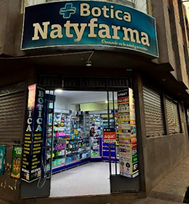

Misión
Pasa el cursor o toca para leer
Brindar a nuestra comunidad productos farmacéuticos y de bienestar de calidad, con atención cercana, rápida y confiable.
Natyfarma es una botica peruana dedicada a la venta de medicamentos, productos farmacéuticos, cuidado personal y suplementos naturales, con atención personalizada y asesoría profesional.
Pasa el cursor o toca para leer
Brindar a nuestra comunidad productos farmacéuticos y de bienestar de calidad, con atención cercana, rápida y confiable.
Pasa el cursor o toca para leer
Ser hacia el 2028 una botica de referencia en nuestra localidad, ampliando nuestra presencia mediante canales digitales.
